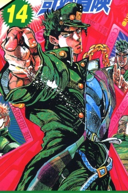
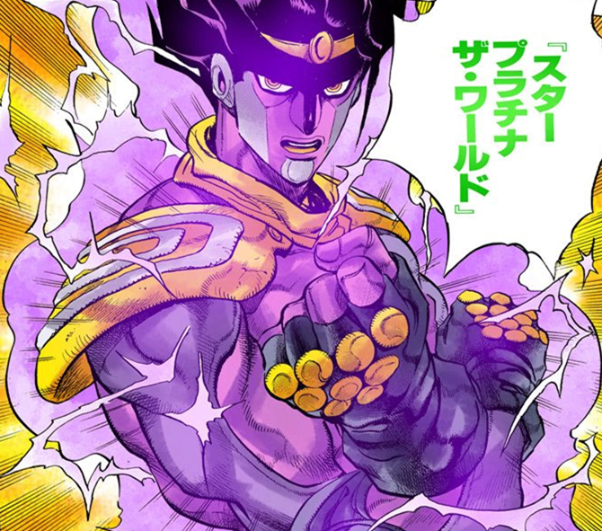

空條承太郎

简介
空条承太郎 （Kujo Jotaro），是日本漫画《JOJO的奇妙冒险》及其衍生作品中的重要角色
，也是贯穿该系列三、四、六部的重要人物。星尘斗士的主角。其替身为“白金之星”。常以智斗取得最终胜利，与DIO生死对决中在绝境之中领悟时间暂停的能力最后战胜并击杀DIO。黄金精神的继承者之一，外冷内热，性格叛逆，却是个有着理智和原则的人。经常被误会成一个无情和冷漠的人。
- 漫畫JOJO的奇妙冒險中登場的人物，為第三部的主角，第四部與第六部的重要配角
- 少數能夠跨好幾部，而且還能占有相當戲份的角色
- 二分之一的日本人（父親），四分之一的英國人（外祖父），四分之一的義大利人（外祖母）
梗
承太郎的帽子几乎已经与他的头部合而为一，但还是曾三度脱下帽子：
- 第三部开头，在监狱自己脱过一次；
- 与恩多尔一战中，帽子被盖布神打掉；帽子飞到了地上！大地变成承太郎了!
- 与小达比一战中，为了故弄玄虚而将帽子脱下来。帽子被放在了电视上！电视变成承太郎了！
- 第四部开头，在批评了东方仗助的发型后，帽子被仗助的替身疯狂钻石嘟啦变形过。然后承太郎愤怒地欧拉了回去能伤害到本体，不愧是新主角互相踩雷
- 在第六部中甚至在无意识的情况下用白金之星攻击了试图拿下帽子的医生。
根据荒木老师的说法，帽子和后头部一体化是为了有「只看背面剪影也能认出是承太郎」的效果，还有就是自己画起来方便。
漫画中，在灰塔战之前承太郎的帽子一直都是正常的，虽然帽子上面有破洞露出头发；灰塔战时帽子才开始和头部一体化。
三部的帽子上印有左手（少数情况下是中指起茧的右手）的图案，这成为作品标志性的图案之一，三部之后也屡屡出现。
四部有3种帽子形态，初期为金色的J和♥装饰（代表JO），中期为海豚和太阳（象征海洋学家的身份，同时看起来形状像JO），后期的帽子上则是同时画着漫画家之手和Prince那个♂和♀合体的图案。（不过这个图案应该是把船锚的图案用细线画出来才会看起来像是把♂和♀合体）
第六部变成紫色帽子上面有一个大的绿色星星（彩漫基准）。
替身

| 基本资料 |
| 本名 |
白金之星·世界 |
| スタープラチナ ザ・ワールド |
| 白金之星·世界 |
| 别号 |
白金世界（スタープラザワールド） |
| 食堂泼辣酱·咋瓦鲁多 |
主体紫色，外观为留着长发的壮硕男性，荒木表示，因为是主角的替身，所以设定成简单又能打的战斗型，造型上是采用守护神的感觉去设计的。白金之星垫肩的灵感可能来自动画『北斗神拳』，垫肩上的漩涡花纹则是为了表现出无限、波纹之类的概念。
- 替身名：白金之星（スタープラチナ / Star Platinum）
- 三部決戰六部復活後進化為白金之星．世界（スタープラチナ・ザ・ワールド / Star Platinum The World）
- 由於承太郎將暫停時間的技能取名為「世界」，因此第四部所有叫白金之星暫停時間的場合都會說「白金之星，世界！」(可能是因為第一個用這技能的迪奧每次停都在那邊紮挖魯抖)，但這不代表替身名變成了「白金之星．世界」。事實上在日文版「間田敏和④」首頁的替身說明，替身名還是維持在白金之星，而石之海第16集的「天堂製造①」頁尾的替身介紹的替身名才真的是「白金之星．世界」，並無三部決戰後就進化或中文版偷懶一說。至於為什麼第六部承太郎時間暫停時不會喊「白金之星‧世界，世界！」就只有他自己知道了，甚至人生最後的時間暫停說的是「就是現在，把時間停下來！」。
- 能力：時間暫停，在第三部最終戰時才覺醒，暫停時間最長5秒。
- 第四部初期對仗助時只剩0.5秒，之後回到2秒左右。
- 直到到第六部後期又回到5秒。
- 再次發動時間暫停大概需要幾十秒到幾分鐘。
- 六圍
- 破壞力：A
- 速度：A
- 精密控制性：A
- 射程範圍：C（2公尺）
- 持續力：A
- 成長性：A→完成（第六部）
- 而白金之星．世界的六圍則是：
- 破壞力：A
- 速度：A
- 精密控制性：A
- 射程範圍：C
- 持續力：E
- 成長性：C
能力
白金之星没有其他特殊能力，但作为代替拥有超强的破坏力、精密度、速度。
- 欧拉欧拉连打：超高速的连拳攻击，也是白金之星的象征性技能。
- 流星指刺：蓄力之后将食指和中指伸长来攻击的技能，用于远程射杀敌人或夹住某个远处的东西。
- 白金吸尘器：靠白金之星的强大持续力使其持续吸气，将前方的东西都吸过来的技能。原作只使用过一次
- 白金望远镜、白金素描仪：白金之星拥有强大的精密度，可以非常精密的识别图像或充当望远镜，也可以快速素描出看到的东西。
- 射击钢珠：为了弥补白金之星的射程，第4部的承太郎研发出的技术。利用近距离力量型替身的高破坏力高速度的特性将钢珠发射出去来进行远程攻击。而白金之星因为精密度也是A，攻击比疯狂钻石更为精确。